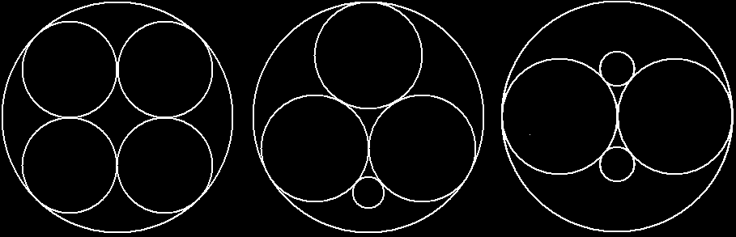

2009 ICPC World Finals · Problem D
Allied Conduit Manufacturing (ACM) makes metal conduit tubes with round cross-sections that enclose many different types of wires. The circular cross-section of a wire can have a diameter up to 20 millimeters (20000 micrometers). ACM needs a program to compute the minimum diameter of a conduit that can hold 4 wires with specified diameters.
Figure 4 shows examples of fitting four wires of different sizes into conduits of minimum diameters.

Your program must take the diameters of wires and determine the minimum inside diameter of the conduit that can hold the wires.
The input file contains several test cases. Each test case consists of a line with four integers, d1, d2, d3, and d4, which are the diameters of the wires in micrometers. The integers satisfy 20000 ≥ d1 ≥ d2 ≥ d3 ≥ d4 > 0. The last test case is followed by a line containing a single integer zero.
For each test case, print the number of the test case (starting with 1) followed by the minimum conduit diameter in micrometers, rounded to the nearest integer. Follow the format of the sample output.
10000 10000 10000 10000 10000 10000 10000 3000 12000 12000 3600 3600 0
Case 1: 24142 Case 2: 21547 Case 3: 24000